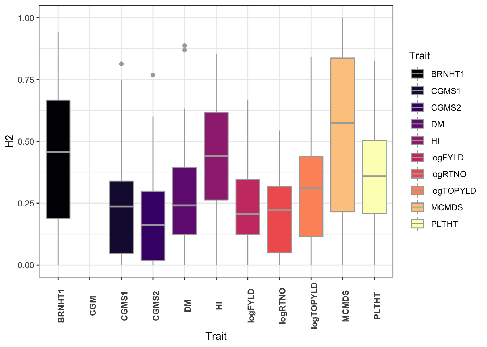
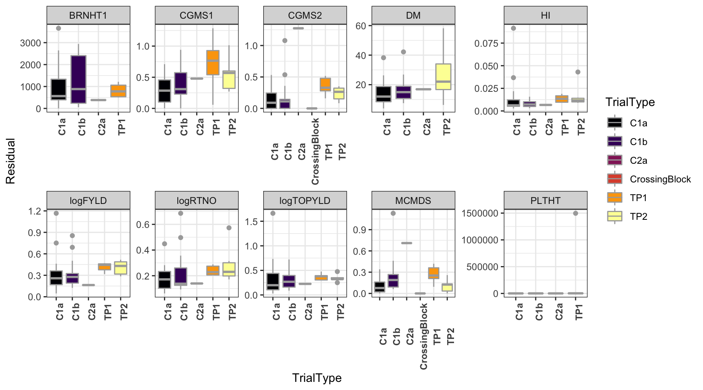

Curate by trait-trial
wolfemd
2020-April-21
Last updated: 2020-04-28
Checks: 7 0
Knit directory: NRCRI_2020GS/
This reproducible R Markdown analysis was created with workflowr (version 1.6.1). The Checks tab describes the reproducibility checks that were applied when the results were created. The Past versions tab lists the development history.
Great! Since the R Markdown file has been committed to the Git repository, you know the exact version of the code that produced these results.
Great job! The global environment was empty. Objects defined in the global environment can affect the analysis in your R Markdown file in unknown ways. For reproduciblity it’s best to always run the code in an empty environment.
The command set.seed(20200421) was run prior to running the code in the R Markdown file. Setting a seed ensures that any results that rely on randomness, e.g. subsampling or permutations, are reproducible.
Great job! Recording the operating system, R version, and package versions is critical for reproducibility.
Nice! There were no cached chunks for this analysis, so you can be confident that you successfully produced the results during this run.
Great job! Using relative paths to the files within your workflowr project makes it easier to run your code on other machines.
Great! You are using Git for version control. Tracking code development and connecting the code version to the results is critical for reproducibility.
The results in this page were generated with repository version 8c45991. See the Past versions tab to see a history of the changes made to the R Markdown and HTML files.
Note that you need to be careful to ensure that all relevant files for the analysis have been committed to Git prior to generating the results (you can use wflow_publish or wflow_git_commit). workflowr only checks the R Markdown file, but you know if there are other scripts or data files that it depends on. Below is the status of the Git repository when the results were generated:
Ignored files:
Ignored: .DS_Store
Ignored: .Rhistory
Ignored: .Rproj.user/
Ignored: analysis/.DS_Store
Ignored: data/.DS_Store
Ignored: output/.DS_Store
Untracked files:
Untracked: NRCRI 2020 GS.gslides
Untracked: data/DatabaseDownload_42120/
Untracked: data/GBSdataMasterList_31818.csv
Untracked: data/IITA_GBStoPhenoMaster_33018.csv
Untracked: data/NRCRI_CleanedTrialData_2020April21.rds
Untracked: data/NRCRI_ExptDesignsDetected_2020April21.rds
Untracked: data/NRCRI_GBStoPhenoMaster_40318.csv
Untracked: data/iita_blupsForCrossVal_72619.rds
Untracked: data/iita_blupsForCrossVal_outliersRemoved_73019.rds
Untracked: output/DosageMatrix_NRCRI_SamplesForGP_2020April27.rds
Untracked: output/GEBV_NRCRI_IITAaugmented_ModelADE_2020April27.rds
Untracked: output/GEBV_NRCRI_IITAaugmented_ModelA_2020April27.rds
Untracked: output/GEBV_NRCRI_NRCRIalone_ModelADE_2020April27.rds
Untracked: output/GEBV_NRCRI_NRCRIalone_ModelA_2020April27.rds
Untracked: output/GETGV_NRCRI_IITAaugmented_ModelADE_2020April27.rds
Untracked: output/GETGV_NRCRI_NRCRIalone_ModelADE_2020April27.rds
Untracked: output/Kinship_AA_NRCRI_2020April27.rds
Untracked: output/Kinship_AD_NRCRI_2020April27.rds
Untracked: output/Kinship_A_NRCRI_2020April27.rds
Untracked: output/Kinship_DD_NRCRI_2020April27.rds
Untracked: output/Kinship_D_NRCRI_2020April27.rds
Untracked: output/NRCRI_CuratedTrials_2020April21.rds
Untracked: output/NRCRI_CuratedTrials_2020April27.rds
Untracked: output/cvresults_AD_nrOnly.rds
Untracked: output/cvresults_A_iitaAugmented.rds
Untracked: output/cvresults_A_nrOnly.rds
Untracked: output/genomicPredictions_ModelADE_NRCRI_2020April27.rds
Untracked: output/genomicPredictions_ModelA_NRCRI_2020April27.rds
Untracked: output/maxNOHAV_byStudy_NRCRI_2020April27.csv
Untracked: output/nrcri_blupsForModelTraining_2020April21.rds
Untracked: output/nrcri_blupsForModelTraining_2020April27.rds
Untracked: workflowr_log.R
Note that any generated files, e.g. HTML, png, CSS, etc., are not included in this status report because it is ok for generated content to have uncommitted changes.
These are the previous versions of the repository in which changes were made to the R Markdown (analysis/02-curateByTrial.Rmd) and HTML (docs/02-curateByTrial.html) files. If you’ve configured a remote Git repository (see ?wflow_git_remote), click on the hyperlinks in the table below to view the files as they were in that past version.
| File | Version | Author | Date | Message |
|---|---|---|---|---|
| Rmd | 8c45991 | wolfemd | 2020-04-28 | Publish the first set of analyses and files for NRCRI 2020 GS. |
Previous step
- Prepare a training dataset: Download data from DB, “Clean” and format DB data
Nest by trial
Start with cleaned data from previous step.
rm(list=ls())
library(tidyverse); library(magrittr);
dbdata<-readRDS(here::here("data","NRCRI_CleanedTrialData_2020April21.rds"))All downstream analyses in this step will by on a per-trial (location-year-studyName combination).
This function converts a data.frame where each row is a plot to one where each row is a trial, with a list-type column TrialData containing the corresponding trial’s plot-data.
nestByTrials<-function(indata){
nested_indata<-indata %>%
# Create some explicitly nested variables including loc and year to nest with the trial data
mutate(yearInLoc=paste0(programName,"_",locationName,"_",studyYear),
trialInLocYr=paste0(yearInLoc,"_",studyName),
repInTrial=paste0(trialInLocYr,"_",replicate),
blockInRep=paste0(repInTrial,"_",blockNumber)) %>%
nest(TrialData=-c(programName,locationName,studyYear,TrialType,studyName))
return(nested_indata)
}# A tibble: 6 x 6
studyYear programName locationName studyName TrialType TrialData
<int> <chr> <chr> <chr> <chr> <list>
1 2012 NRCRI Umudike 12CET500TP1umu TP1 <tibble [1,500 ×…
2 2013 NRCRI Umudike 13CET489tp2umu TP2 <tibble [1,500 ×…
3 2013 NRCRI Otobi 13CET518TP1Oto… TP1 <tibble [1,554 ×…
4 2013 NRCRI Umudike 13CET518TP1umu TP1 <tibble [1,554 ×…
5 2013 NRCRI Kano 13TP1CET518kano TP1 <tibble [1,554 ×…
6 2015 NRCRI Kano 14CETtp2set2ka… TP2 <tibble [250 × 3…# A tibble: 6 x 36
studyDesign plotWidth plotLength fieldSize plantingDate harvestDate
<chr> <dbl> <dbl> <dbl> <chr> <chr>
1 Alpha 1 5 1.5 2012-Septem… 2013-Septe…
2 Alpha 1 5 1.5 2012-Septem… 2013-Septe…
3 Alpha 1 5 1.5 2012-Septem… 2013-Septe…
4 Alpha 1 5 1.5 2012-Septem… 2013-Septe…
5 Alpha 1 5 1.5 2012-Septem… 2013-Septe…
6 Alpha 1 5 1.5 2012-Septem… 2013-Septe…
# … with 30 more variables: germplasmName <chr>, replicate <int>,
# blockNumber <int>, plotNumber <int>, rowNumber <lgl>, colNumber <int>,
# entryType <chr>, CGM <lgl>, CGMS1 <dbl>, CGMS2 <dbl>, DM <dbl>,
# PLTHT <dbl>, BRNHT1 <dbl>, NOHAV <dbl>, HI <dbl>, PlotSpacing <dbl>,
# MaxNOHAV <dbl>, logFYLD <dbl>, logTOPYLD <dbl>, logRTNO <dbl>,
# PropNOHAV <dbl>, MCMDS <dbl>, OrigKeyFile <chr>, OriginOfSample <chr>,
# FullSampleName <chr>, GID <chr>, yearInLoc <chr>, trialInLocYr <chr>,
# repInTrial <chr>, blockInRep <chr>Detect experimental designs
The next step is to check the experimental design of each trial. If you are absolutely certain of the usage of the design variables in your dataset, you might not need this step.
Examples of reasons to do the step below:
- Some trials appear to be complete blocked designs and the blockNumber is used instead of replicate, which is what most use.
- Some complete block designs have nested, incomplete sub-blocks, others simply copy the “replicate” variable into the “blockNumber variable”
- Some trials have only incomplete blocks but the incomplete block info might be in the replicate and/or the blockNumber column
One reason it might be important to get this right is that the variance among complete blocks might not be the same among incomplete blocks. If we treat a mixture of complete and incomplete blocks as part of the same random-effect (replicated-within-trial), we assume they have the same variance.
Also error variances might be heterogeneous among different trial-types (blocking scheme available) and/or plot sizes (maxNOHAV).
detectExptDesigns<-function(nestedDBdata){
# Define complete blocks
nestedDBdata %>%
mutate(Nobs=map_dbl(TrialData,~nrow(.)),
MaxNOHAV=map_dbl(TrialData,~unique(.$MaxNOHAV)),
Nrep=map_dbl(TrialData,~length(unique(.$replicate))),
Nblock=map_dbl(TrialData,~length(unique(.$blockInRep))),
Nclone=map_dbl(TrialData,~length(unique(.$germplasmName))),
# median number of obs per clone
medObsPerClone=map_dbl(TrialData,~count(.,germplasmName) %$% round(median(n),1)),
# median number of obs per replicate
medObsPerRep=map_dbl(TrialData,~count(.,replicate) %$% round(median(n),1)),
# Define complete block effects based on the "replicate" variable
CompleteBlocks=ifelse(Nrep>1 & medObsPerClone==Nrep & Nobs!=Nrep,TRUE,FALSE),
# Additional trials with imperfect complete blocks
CompleteBlocks=ifelse(Nrep>1 & medObsPerClone!=Nrep & medObsPerClone>1 & Nobs!=Nrep,TRUE,CompleteBlocks)) -> x
x %>%
# Some complete blocks may only be represented by the "blockNumber" column
mutate(medBlocksPerClone=map_dbl(TrialData,~select(.,blockInRep,germplasmName) %>%
# median number of blockInRep per clone
distinct %>%
count(germplasmName) %$%
round(median(n))),
# If CompleteBlocks==FALSE (complete blocks not detected based on replicate)
# and if more than half the clones are represented in more than one block based on the blockInRep variable
# Copy the blockInRep values into the repInTrial column
# Recompute Nrep
# and declare CompleteBlocks==TRUE
TrialData=ifelse(medBlocksPerClone>1 & CompleteBlocks==FALSE,map(TrialData,~mutate(.,repInTrial=blockInRep)),TrialData),
Nrep=map_dbl(TrialData,~length(unique(.$repInTrial))),
CompleteBlocks=ifelse(medBlocksPerClone>1 & CompleteBlocks==FALSE,TRUE,CompleteBlocks)) -> y
# Define incomplete blocks
y %>%
mutate(repsEqualBlocks=map_lgl(TrialData,~all(.$replicate==.$blockNumber)),
NrepEqualNblock=ifelse(Nrep==Nblock,TRUE,FALSE),
medObsPerBlockInRep=map_dbl(TrialData,~count(.,blockInRep) %$% round(median(n),1))) -> z
# Define complete blocked trials with nested sub-blocks
z %<>%
mutate(IncompleteBlocks=ifelse(CompleteBlocks==TRUE & Nobs!=Nblock & Nblock>1 & medObsPerBlockInRep>1 & NrepEqualNblock==FALSE,TRUE,FALSE))
# Define clearly unreplicated (CompleteBlocks==FALSE & Nrep==1) trials with nested sub-blocks
z %<>%
mutate(IncompleteBlocks=ifelse(CompleteBlocks==FALSE & Nobs!=Nblock & Nblock>1 & medObsPerBlockInRep>1 & Nrep==1,TRUE,IncompleteBlocks))
# Define additional trials with incomplete blocks (blockInRep) where CompleteBlocks==FALSE but Nrep>1 and Nrep==Block
z %<>%
mutate(IncompleteBlocks=ifelse(CompleteBlocks==FALSE & IncompleteBlocks==FALSE &
Nobs!=Nblock & Nblock>1 & Nobs!=Nrep &
medObsPerBlockInRep>1 & Nrep>1 & NrepEqualNblock==TRUE,TRUE,IncompleteBlocks))
# Last few cases (2 trials actually) where Nrep>1 and Nblock>1 and Nrep!=Nblock but CompleteBlocks==FALSE
z %<>%
mutate(IncompleteBlocks=ifelse(CompleteBlocks==FALSE & IncompleteBlocks==FALSE &
Nobs!=Nblock & Nobs!=Nrep &
medObsPerBlockInRep>1 & Nrep>1,TRUE,IncompleteBlocks))
return(z)
}Detect designs
# A tibble: 4 x 4
programName CompleteBlocks IncompleteBlocks n
<chr> <lgl> <lgl> <int>
1 NRCRI FALSE FALSE 3
2 NRCRI FALSE TRUE 15
3 NRCRI TRUE FALSE 78
4 NRCRI TRUE TRUE 26Model by trait-trial
This next step fits models to each trial (for each trait)
rm(list=ls())
library(tidyverse); library(magrittr);
dbdata<-readRDS(here::here("data","NRCRI_ExptDesignsDetected_2020April21.rds"))
traits<-c("CGM","CGMS1","CGMS2","MCMDS","DM","PLTHT","BRNHT1","HI","logFYLD","logTOPYLD","logRTNO")Functions
Nest by trait-trial. This next function will structure input trial data by trait. This will facilitate looping downstream analyses over each trait for each trial.
nestTrialsByTrait<-function(indata,traits){
nested_trialdata<-dbdata %>%
select(-MaxNOHAV) %>%
unnest(TrialData) %>%
pivot_longer(cols = any_of(traits),
names_to = "Trait",
values_to = "TraitValue") %>%
nest(TraitByTrialData=-c(Trait,studyYear,programName,locationName,studyName,TrialType))
return(nested_trialdata)
}Minor support function: calc. proportion missing given a numeric vector.
Function to curate a single trait-trial data chunk.
# Trait<-"logFYLD"
# TraitByTrialData<-dbdata %>% filter(studyName=="18C2acrossingblockCETubiaja",Trait=="logFYLD") %$% TraitByTrialData[[1]]
# GID="GID"
#rm(Trait,TraitData,GID)
curateTrialOneTrait<-function(Trait,TraitByTrialData,GID="GID"){
require(lme4)
modelFormula<-paste0("TraitValue ~ (1|",GID,")")
modelFormula<-ifelse(all(TraitByTrialData$CompleteBlocks),
paste0(modelFormula,"+(1|repInTrial)"),modelFormula)
modelFormula<-ifelse(all(TraitByTrialData$IncompleteBlocks),
paste0(modelFormula,"+(1|blockInRep)"),modelFormula)
modelFormula<-ifelse(grepl("logRTNO",Trait) | grepl("logFYLD",Trait) | grepl("logTOPYLD",Trait),
paste0(modelFormula,"+PropNOHAV"),modelFormula)
propMiss<-calcPropMissing(TraitByTrialData$TraitValue)
fit_model<-possibly(function(modelFormula,TraitByTrialData){
model_out<-lmer(as.formula(modelFormula),data=TraitByTrialData)
if(!is.na(model_out)){
outliers<-which(abs(rstudent(model_out))>=3.3)
if(length(outliers)>0){
model_out<-lmer(as.formula(modelFormula),data=TraitByTrialData,
subset=abs(rstudent(model_out))<3.3)
}
}
return(list(model_out=model_out,outliers=outliers)) },
otherwise = NA)
model_out<-fit_model(modelFormula,TraitByTrialData)
if(is.na(model_out)){
out <-tibble(H2=NA,VarComps=list(NULL),BLUPs=list(NULL),Model=modelFormula,Noutliers=NA,Outliers=NA,propMiss=propMiss)
} else {
varcomps<-as.data.frame(VarCorr(model_out[["model_out"]]))[,c("grp","vcov")] %>%
spread(grp,vcov)
Vg<-varcomps$GID
H2<-Vg/(Vg+varcomps$Residual)
BLUP<-ranef(model_out[["model_out"]], condVar=TRUE)[[GID]]
PEV <- c(attr(BLUP, "postVar"))
blups<-tibble(GID=rownames(BLUP),BLUP=BLUP$`(Intercept)`,PEV=PEV) %>%
mutate(REL=1-(PEV/Vg),
drgBLUP=BLUP/REL,
WT=(1-H2)/((0.1 + (1-REL)/REL)*H2))
out <- tibble(H2=H2,
VarComps=list(varcomps),
BLUPs=list(blups),
Model=modelFormula,
Noutliers=length(model_out[["outliers"]]),
Outliers=list(model_out[["outliers"]]),
propMiss=propMiss) }
return(out)
}Fit models
tibble [1 × 13] (S3: tbl_df/tbl/data.frame)
$ studyYear : int 2012
$ programName : chr "NRCRI"
$ locationName: chr "Umudike"
$ studyName : chr "12CET500TP1umu"
$ TrialType : chr "TP1"
$ Trait : chr "CGMS1"
$ H2 : num 7.36e-07
$ VarComps :List of 1
..$ :'data.frame': 1 obs. of 4 variables:
.. ..$ blockInRep: num 0.00029
.. ..$ GID : num 4.3e-08
.. ..$ repInTrial: num 0.000914
.. ..$ Residual : num 0.0584
$ BLUPs :List of 1
..$ : tibble [500 × 6] (S3: tbl_df/tbl/data.frame)
.. ..$ GID : chr [1:500] "AR124:250107818" "AR1410:250399710" "AR144:250107805" "AR155:250134515" ...
.. ..$ BLUP : num [1:500] -4.87e-08 -3.60e-08 -6.19e-08 -3.69e-08 -3.24e-09 ...
.. ..$ PEV : num [1:500] 4.3e-08 4.3e-08 4.3e-08 4.3e-08 4.3e-08 ...
.. ..$ REL : num [1:500] 2.20e-06 2.20e-06 2.20e-06 2.19e-06 1.46e-06 ...
.. ..$ drgBLUP: num [1:500] -0.02218 -0.01642 -0.0282 -0.01683 -0.00222 ...
.. ..$ WT : num [1:500] 2.98 2.98 2.98 2.98 1.99 ...
$ Model : chr "TraitValue ~ (1|GID)+(1|repInTrial)+(1|blockInRep)"
$ Noutliers : int 11
$ Outliers :List of 1
..$ : Named int [1:11] 1 224 245 603 606 644 675 841 917 1071 ...
.. ..- attr(*, "names")= chr [1:11] "1" "225" "247" "613" ...
$ propMiss : num 0.0187Plot Results
dbdata %>%
ggplot(.,aes(x=Trait,y=H2,fill=Trait)) +
geom_boxplot(color='darkgray') +
theme_bw() +
scale_fill_viridis_d(option = 'magma') +
theme(axis.text.x = element_text(face='bold',angle=90))
dbdata %>%
select(studyYear:VarComps) %>%
unnest(VarComps) %>%
ggplot(.,aes(x=TrialType,y=Residual,fill=TrialType)) +
geom_boxplot(color='darkgray') +
theme_bw() + facet_wrap(~Trait,scales = 'free',nrow=2) +
scale_fill_viridis_d(option = 'inferno') + theme(axis.text.x = element_text(angle=90,face='bold'))
dbdata %>%
select(studyYear:VarComps) %>%
unnest(VarComps) %>%
ggplot(.,aes(x=TrialType,y=H2,fill=TrialType)) +
geom_boxplot(color='darkgray') +
theme_bw() + facet_wrap(~Trait,scales = 'free',nrow=2) +
scale_fill_viridis_d(option = 'inferno') + theme(axis.text.x = element_text(angle=90,face='bold'))
dbdata %>%
ggplot(.,aes(x=TrialType,y=Noutliers,fill=TrialType)) +
geom_boxplot(color='darkgray') +
theme_bw() + facet_wrap(~Trait,scales = 'free',nrow=2) +
scale_fill_viridis_d(option = 'inferno') + theme(axis.text.x = element_text(angle=90,face='bold'))
Next step
- Get BLUPs combining all trial data: Combine data from all trait-trials to get BLUPs for downstream genomic
R version 3.6.1 (2019-07-05)
Platform: x86_64-apple-darwin15.6.0 (64-bit)
Running under: macOS Mojave 10.14.6
Matrix products: default
BLAS: /Library/Frameworks/R.framework/Versions/3.6/Resources/lib/libRblas.0.dylib
LAPACK: /Library/Frameworks/R.framework/Versions/3.6/Resources/lib/libRlapack.dylib
locale:
[1] en_US.UTF-8/en_US.UTF-8/en_US.UTF-8/C/en_US.UTF-8/en_US.UTF-8
attached base packages:
[1] stats graphics grDevices utils datasets methods base
other attached packages:
[1] lme4_1.1-23 Matrix_1.2-18 magrittr_1.5 forcats_0.5.0
[5] stringr_1.4.0 dplyr_0.8.5 purrr_0.3.4 readr_1.3.1
[9] tidyr_1.0.2 tibble_3.0.1 ggplot2_3.3.0 tidyverse_1.3.0
[13] workflowr_1.6.1
loaded via a namespace (and not attached):
[1] Rcpp_1.0.4.6 lubridate_1.7.8 here_0.1 lattice_0.20-41
[5] assertthat_0.2.1 rprojroot_1.3-2 digest_0.6.25 utf8_1.1.4
[9] R6_2.4.1 cellranger_1.1.0 backports_1.1.6 reprex_0.3.0
[13] evaluate_0.14 httr_1.4.1 pillar_1.4.3 rlang_0.4.5
[17] readxl_1.3.1 minqa_1.2.4 rstudioapi_0.11 nloptr_1.2.2.1
[21] whisker_0.4 rmarkdown_2.1 labeling_0.3 splines_3.6.1
[25] statmod_1.4.34 munsell_0.5.0 broom_0.5.6 compiler_3.6.1
[29] httpuv_1.5.2 modelr_0.1.6 xfun_0.13 pkgconfig_2.0.3
[33] htmltools_0.4.0 tidyselect_1.0.0 viridisLite_0.3.0 fansi_0.4.1
[37] crayon_1.3.4 dbplyr_1.4.3 withr_2.2.0 later_1.0.0
[41] MASS_7.3-51.6 grid_3.6.1 nlme_3.1-147 jsonlite_1.6.1
[45] gtable_0.3.0 lifecycle_0.2.0 DBI_1.1.0 git2r_0.26.1
[49] scales_1.1.0 cli_2.0.2 stringi_1.4.6 farver_2.0.3
[53] fs_1.4.1 promises_1.1.0 xml2_1.3.2 ellipsis_0.3.0
[57] generics_0.0.2 vctrs_0.2.4 boot_1.3-25 tools_3.6.1
[61] glue_1.4.0 hms_0.5.3 yaml_2.2.1 colorspace_1.4-1
[65] rvest_0.3.5 knitr_1.28 haven_2.2.0